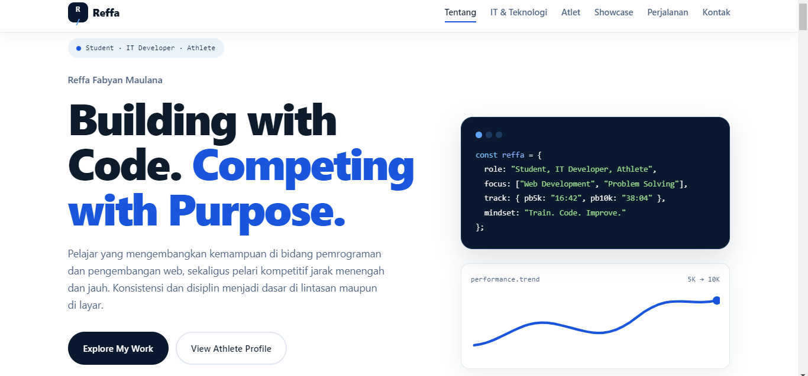
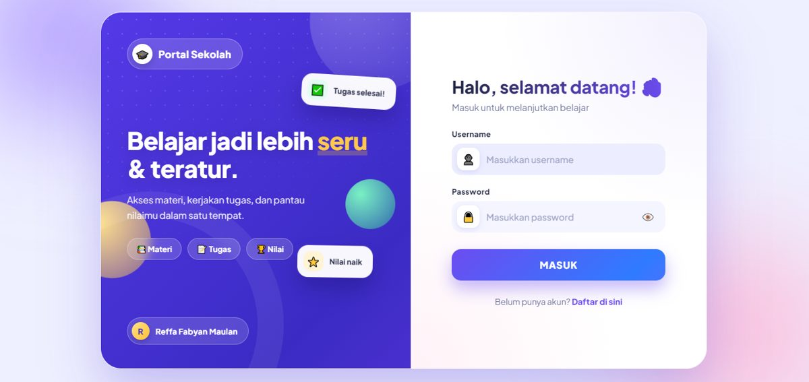
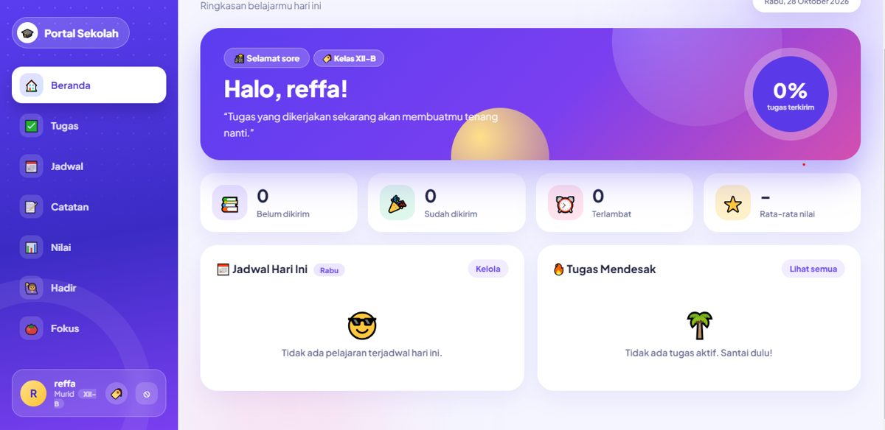
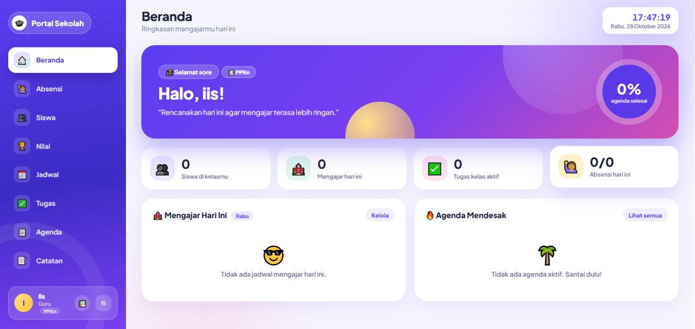
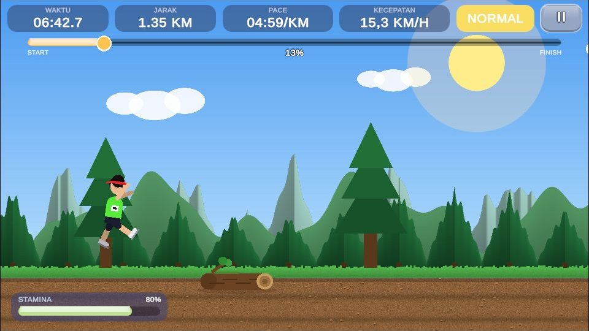
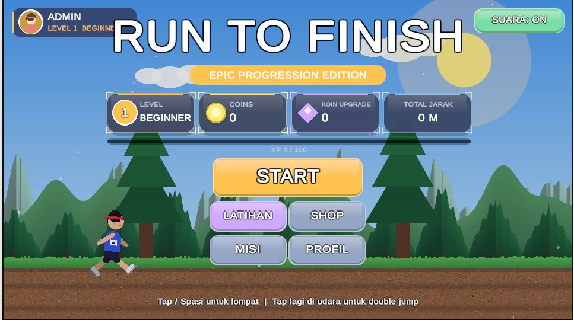
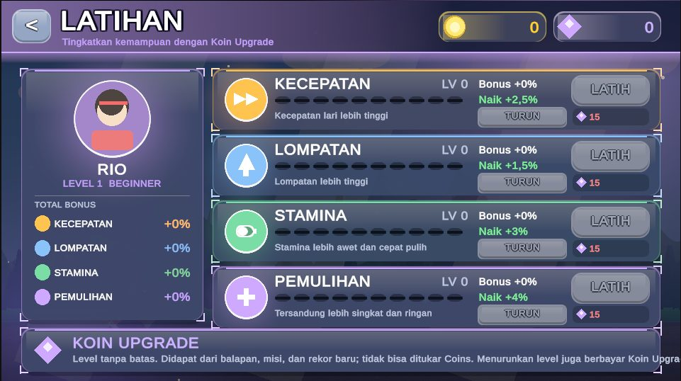
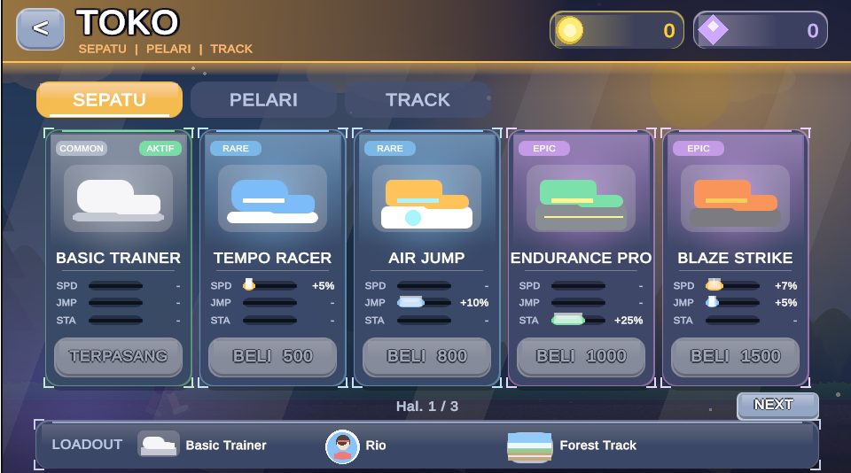
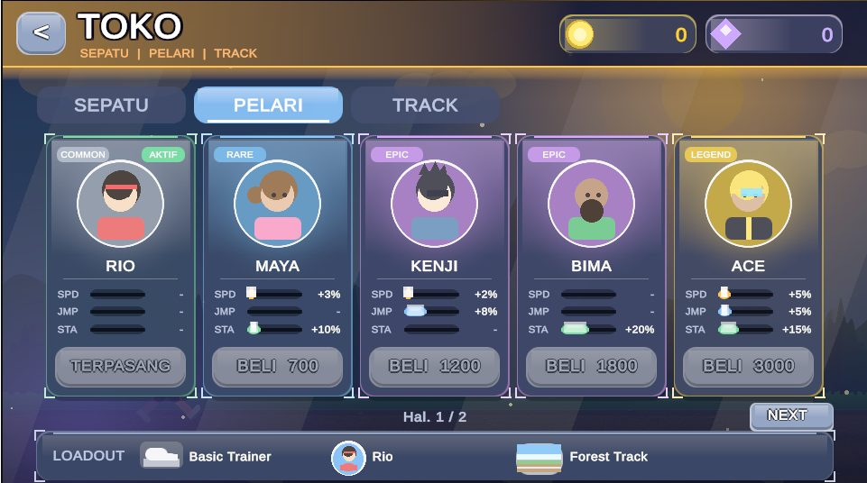

Disiplin
Menjalani proses yang sama setiap hari, bahkan saat tidak ada yang melihat.
Student · IT Developer · Athlete
Reffa Fabyan Maulana
Pelajar yang mengembangkan kemampuan di bidang pemrograman dan pengembangan web, sekaligus pelari kompetitif jarak menengah dan jauh. Konsistensi dan disiplin menjadi dasar di lintasan maupun di layar.
Saya Reffa, seorang pelajar yang menekuni pemrograman dan pengembangan perangkat lunak sambil berkompetisi di cabang atletik lari jarak menengah dan jauh. Keduanya terlihat berbeda, tetapi dibangun dengan cara yang sama: latihan berulang, evaluasi jujur, dan perbaikan sedikit demi sedikit.
Di lintasan, saya belajar mengatur tenaga, membaca situasi, dan tetap tenang saat tertekan. Di depan layar, saya belajar memecah masalah besar menjadi langkah kecil dan menyelesaikannya satu per satu.
Tujuan saya adalah terus berkembang di kedua bidang, membangun karya yang bermanfaat, dan mencapai catatan waktu yang lebih baik.
Menjalani proses yang sama setiap hari, bahkan saat tidak ada yang melihat.
Kemajuan kecil yang rutin lebih kuat daripada usaha besar yang sesekali.
Memecah masalah, menguji solusi, lalu memperbaikinya.
Mencari sumber, mencoba sendiri, dan tidak berhenti di satu jawaban.
Membagi jam belajar, latihan, dan istirahat dengan terencana.
Siap menghadapi tekanan dan menjadikan kekalahan sebagai bahan belajar.
Bagian ini menampilkan kemampuan teknis dan karya pribadi. Isi sesuai kemampuan dan proyek yang sebenarnya.

Website portofolio yang menggabungkan profil IT dan atletik dalam satu identitas.



Aplikasi web kelas digital tempat siswa mengirim tugas secara online dan guru memantau tugas, nilai, serta kehadiran, dalam satu portal seperti Google Classroom.





Game lari 2D bertema atletik yang bisa dimainkan langsung di browser. Pemain mengatur stamina dan pace menuju garis finis, lalu meningkatkan pelarinya lewat latihan dan toko.
Saya belajar pemrograman secara bertahap: dari tugas sekolah, latihan mandiri, lalu membangun proyek nyata. Setiap proyek saya jadikan cara untuk mempelajari hal baru, dan setiap error saya perlakukan seperti evaluasi setelah lomba: dicari penyebabnya, diperbaiki, lalu diulang sampai benar.
Student Athlete cabang atletik. Fokus pada lari lintasan dan jalan raya.
5K
10K
Kabupaten Bandung, 2024
Juara 2 Jawa Barat, 2024
Piala Kemenpora Region Bandung
Piala Kemenpora Region Jawa Barat
Piala Garuda Muda
Piala Forsmi kota Cimahi
Bandung Adhyaksa Unpad Run
MILO ACTIV Indonesia Race
Polresta Bandung Run
Hasil terbaik datang dari proses yang berakar pada KONSISTENSI. Filosofi saya dibangun di atas prinsip 80/20 polarized training dengan volume terstruktur (100-140 km/minggu), di mana kedisiplinan menjaga recovery pace mutlak diperlukan agar tubuh siap mengeksekusi intensitas maksimal saat sesi cepat. Dengan menggabungkan double-session, pengkondisian fisik tambahan (strength, core, & plyometric), serta istirahat yang terukur, setiap sesi menjadi evaluasi jujur untuk terus menembus batas waktu di lintasan. RUN • DREAM • REPEAT.
| Tahun | Kompetisi | Tingkat | Hasil |
|---|---|---|---|
| 2024 | Piala Kemenpora Region Bandung | Kabupaten Bandung | Juara 1 |
| 2024 | Piala Kemenpora Region Jawa Barat | Provinsi Jawa Barat | Juara 2 |
| 2025 | Piala Garuda Muda | Kota Bandung | Juara 3 |
| 2025 | Piala Forsmi kota Cimahi | Kota Cimahi | Juara 3 |
| 2025 | Baur Run | Kota Bandung | Top 6 |
| 2026 | MILO ACTIV Indonesia Race (MAIR) | Kota Bandung | Top 7 |
| 2026 | Polresta Bandung Run | Kabupaten Bandung | Top 10 |
Proyek yang dibangun dengan kode.
Hasil yang dibangun dengan latihan.
Perjalanan hidup diriku di bidang IT dan Athletics
belajar di bidang ini berawal saya mencoba untuk oprek hp secara mandiri menggunakan termux dan brevent lalu saya masuk ke SMKN 7 BALEENDAH untuk mengasah ilmu itu
Berawal dari saya yang gabut di rumah ketika tidak ada latihan sepak bola, dan saya pindah ke dunia Athletics ketika cedera saya tidak sembuh sembuh ketika menjadi atlet sepakbola dan saya putuskan untuk pindah cabor
Dua podium di tahun yang sama dan termasuk prime saya di cabang olahraga sepakbola
Konsisten di podium tingkat kota dan masuk enam besar di lari jalan raya.
Membangun aplikasi web Portal Sekolah dengan PHP dan MySQL, serta mempublikasikan game Run to Finish buatan Unity di itch.io.
Bersaing di dua event lari jalan raya.
Terbuka untuk kolaborasi proyek, diskusi teknologi, magang, dan kegiatan atletik. Hubungi saya melalui salah satu kanal berikut.